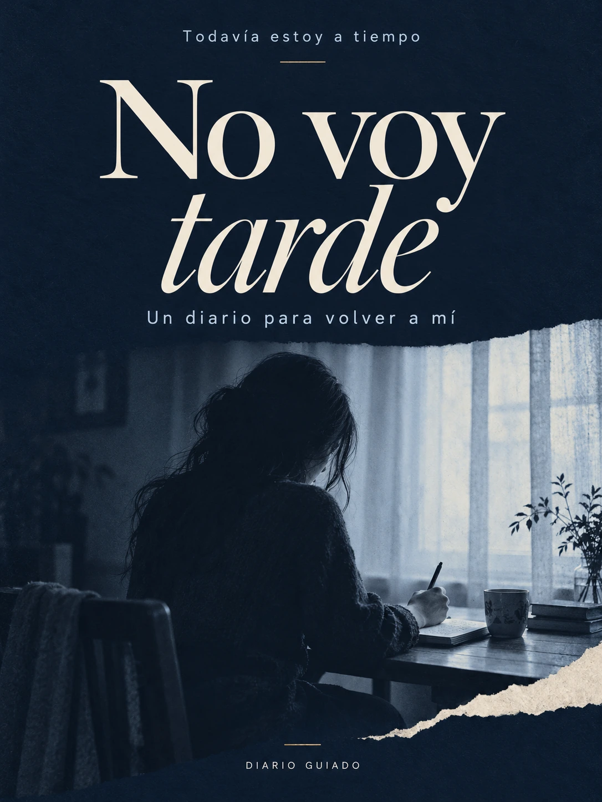

yo también mehe sentido así
DIARIO GUIADO · 8 REFLEXIONES
No voy tarde.
Un diario para volver a mí
Un diario digital de autoconocimiento, inspirado en las conversaciones de la primera serie. Para escuchar tu voz cuando sientes que vas detrás de todo el mundo.
$4.99 USD · PDF DIGITAL
Pago seguro con Stripe. Al confirmarse la compra, recibirás el enlace de tu PDF por correo electrónico. Si necesitas ayuda, escríbenos aquí.
Volver a la colecciónLO QUE ENCONTRARÁS
Un espacio que se siente tuyo.
Para esos días en que te preguntas si ya deberías haber llegado más lejos. No necesitas cambiar tu vida de un día para otro para comenzar a mirarla con más cariño.
- 8 reflexiones inspiradas en la primera serie del podcast
- Preguntas de escritura para revisar expectativas y comparaciones
- Espacios para reconocer pequeños logros y decisiones propias
- Un formato digital para volver a sus páginas cuando lo necesites